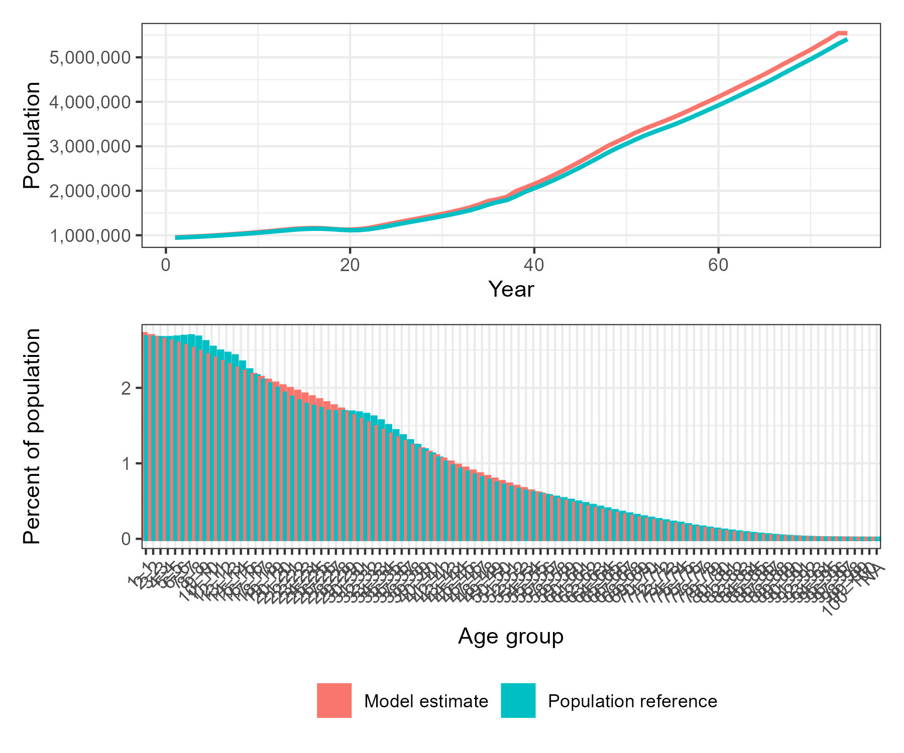
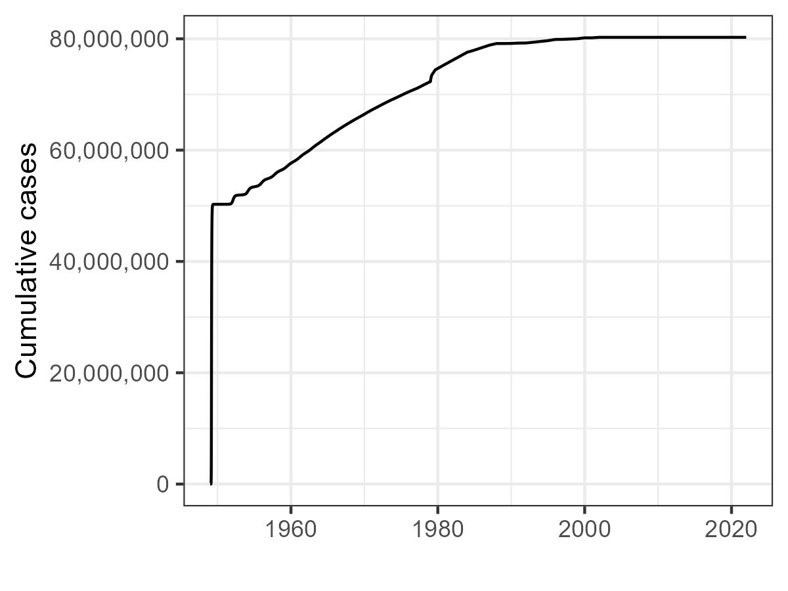
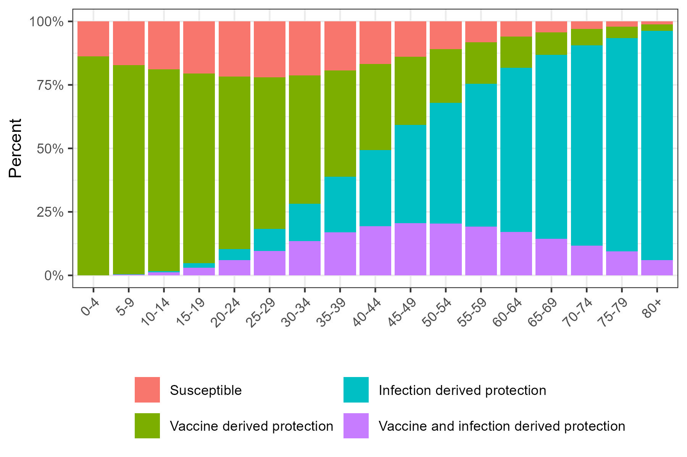
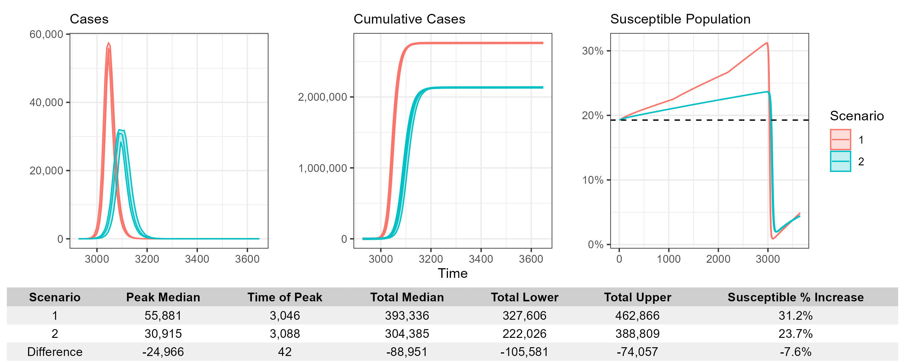

Getting Started with PREVAIL
Getting_started.RmdIntroduction
Welcome to the PREVAIL package — PRojection of
Epidemics and VAccination Impact under Lapses in coverage — a
flexible framework for age-, risk-, and vaccination-stratified
infectious disease modeling, tailored for crisis settings. This vignette
walks through a basic end-to-end simulation using default package
functions to load data, run a stochastic transmission model, and
visualize results.
In this vignette we will be using the default data included in the package. If you are interested in learning how to use your own data on demography, vaccination, or infection dynamics please see the linked vignettes.
The below example will run through a measles transmission model in Palestine (“PSE”) using these prebuilt internal datasets and the transmission model implemented in Odin.
1. Install and load Required Packages
First we need to install the PREVAIL package, which
we install from github using the function install_github()
from the devtools package.
devtools::install_github("arranhamlet/PREVAIL")Once installed, we can load in the required packages for this vignette. In addition to PREVAIL, we will also be using tidyverse. To load these, we will be using the pacman package, which will also install these packages if missing.
#If pacman is not already present, install
if(!require("pacman")) install.packages("pacman")
#Install missing packages, and load
pacman::p_load(
PREVAIL,
tidyverse
)2. Load and Process Parameters
Before running the model, you must assemble all demographic,
vaccination, and disease parameters tailored for your scenario. The
data_load_process_wrapper() function consolidates all this
information using package datasets.
iso - The 3 letter country code that specifies which
UN recognised country or territory we are interested in. This will
determine our demography, vaccination coverage and prior disease
exposure. For a full list please see
data(PREVAIL_locations). In this example we will use “PSE”
for Palestine.
R0 - The basic reproductive number. This determines how many secondary infections we would expect to see from an initial infection. The higher the number, the more infectious the disease is.
cfr_off - Sets the CFR to zero. Used when calculating current susceptibility as prior mortality rates will already include disease specific mortality.
year_start - The first year of data to input into the model. This determines the data to load into the model, and allows us to replicate historical patterns in demography, vaccination and infection. The range is from 1950 to 2023, and the default of “” uses the entire dataset.
year_end - The final year of data to input into the
model. This determines the data to load into the model, and allows us to
replicate historical patterns in demography, vaccination and infection.
The range is from 1950 to 2023, and the default of “” uses the entire
dataset. This must be equal to or larger than
year_start = .
WHO_seed_switch - If FALSE, the model allows for dynamic disease transmission throughout the entire period. If TRUE, the model allows for dynamic disease transmission prior to 1980 (when WHO cases are not available), but from 1980 onwards, it matches annual cases to the number reported to the WHO. This allows the user to replicate reported cases.
aggregate_age - If TRUE, the model aggregates the
baseline single year age groups of 0-100, to the values specified in
new_age_breaks =.
new_age_breaks - The age breaks to aggregate to if
aggregate_age = TRUE.
params <- data_load_process_wrapper(
# Specify the country or territory using its ISO3 code.
# This determines demography, vaccination coverage, and prior infection.
iso = "PSE", # Palestine
# The disease of interest; used to match internal schedules and parameters.
disease = "measles",
# Basic reproductive number; governs overall infectiousness.
R0 = 15,
#cfr_off; Sets the CFR to zero.
cfr_off = T,
# Start year of historical data input (1950–2023).
# Set to "" to use the full dataset range.
year_start = "",
# End year of historical data input (1950–2023).
# Must be equal to or after year_start.
year_end = "",
# If TRUE, uses WHO-reported annual case data from 1980 onward to seed the model.
# If FALSE, allows fully dynamic transmission throughout.
WHO_seed_switch = TRUE,
# Whether to aggregate single-year age groups (0–100) into larger age bands.
aggregate_age = TRUE,
# The age group cut points to use if aggregating age groups.
new_age_breaks = c(0, 5, 10, 15, 20, 25, 30, 35, 40, 45, 50, 55, 60, 65, 70, 75, 80, Inf)
)The output of this function is a list of the parameters required to run the mathematical model of disease transmission.
3. Run the Model
One we have generated our parameters, we can use the function
run_model_unpack_results() to run the model using our
previously generated parameters.
This function takes two arguments, the parameters we have previously
generated params, and the no_runs which
specifies the number of stochastic runs we want the model to run.
Running the model multiple times helps account for the inherent
randomness in disease transmission. However, increasing the number of
runs also increases computation time. For large populations (e.g., over
one million), results tend to be stable across runs, so a smaller number
of simulations is often sufficient. In contrast, smaller populations
(e.g., a few thousand) may require more runs to capture variability in
outcomes.
Here we will look at a single run of the model.
model_run <- run_model_unpack_results(
params = params,
simulation_length = (params$input_data$year_end - params$input_data$year_start) * 365,
no_runs = 1
)4. Check our model outputs
Once run, we can quickly look to see if the model has accurately captured the total population, and the end age breakdowns over time. This is a useful check to make sure we are going to be accurately capturing the effects of historical vaccination and infection on our current population.
To do this we use the function demographic_check() which
will produce three plots.
-
population_plot- The total population over time from our model and a reference population. -
age_breakdown_plot- The number of individuals by age from our model and a reference population for the final year of the simulation. -
combined_plot- These two plots combined.
This function takes three arguments:
reference_population - The population we want to
compare our model results to. This is provided by our
data_load_process_wrapper() function and can be extracted
in our vignette through params$population. This must match
the age compartments found in the model.
model_run - The output of
run_model_unpack_results().
age_breaks - A numeric vector of age group
breakpoints (e.g., c(0, 5, 10, ..., 80, Inf)). Found in
params$input_data$age_breaks.
#Check demographics
demographic_plots <- demographic_check(
reference_population = params$population * 1000,
model_run = model_run,
age_breaks = params$input_data$age_breaks
)
demographic_plots$combined_plotWhy? - To ensure your simulation is built on realistic demography, and that population aging and growth trends match external data.

The top panel shows total population growth over time for both the model estimate and the reference dataset. The bottom panel compares the age distribution as a percentage of total population, highlighting the alignment and differences between the modelled and reference (UN WPP) demographic structures. This allows rapid assessment of demographic fidelity prior to simulation.
Visualising Model Outputs
We can also quickly visualise the outputs using the function
summary_plots(), which produces four plots and a data frame
summarising susceptibility profiles over time and age.
plots <- summary_plots(
model_run = model_run,
params = params
)The function returns a named list containing:
-
select_state_plot: A faceted time-series plot showing the median and 95% uncertainty intervals for:- Susceptible
- Exposed
- Infectious
- Infectious, severe
- Recovered
- Recovered with complications
- Total population
- Cases
susceptibility_plot: A bar chart showing the susceptibility profile of the population at the most recent year, broken down by age group.vaccination_coverage_plot: A line plot showing the proportion of the population with any vaccine-derived protection (including mixed) over time.cumulative_case_plot: A cumulative incidence plot with uncertainty bands.susceptibility_data: A weeklydata.tablein long format that shows the evolving proportion of the population in each susceptibility class.
Here we show the cumulative_case_plot and
susceptibility_plot.

Cumulative cases over time. Note the rapid flattening after
widespread vaccination and when cases are switched due to
WHO_seed_switch = TRUE.

Baseline age-specific immunity profile. Younger ages tend to have vaccine-derived protection; older ages have more infection-derived immunity.
5. Calculate current susceptibility and prepare for onward projections.
Once we are satisfied with our model outputs, we can calculate the
susceptibility of the population at the final timepoint. This will be
used to establish a baseline population-level susceptibility for our
onward projections. This is done using
current_susceptibility(), which uses the output of
run_model_unpack_results().
#Process current susceptibility for onward runs
current_susceptibility <- calculate_current_susceptibility(
model_run = model_run
)Next, we want to set up our onward scenario projections. In this example we will be looking forward 10 years, with vaccination steadily decreasing, cases being introduced in year 7, and R0 remaining constant. To summarise our onwards scenario, we need to create a data.frame with four columns.
year - The year of simulation.
relative_coverage - The relative vaccination
coverage compared to the final entry of
params$vaccination_coverage. A value of 0.5 would indicate
vaccination coverage is half of previously seen, and a value of 2.0
would indicate vaccination coverage is twice as high.
introduced_cases - The number of cases to be introduced in that year. Introduced at the first timestep of the year and allocated to the unvaccinated compartment. Age is randomly selected based on a population weighting.
R0 - The absolute value of R0.
Here we will create an example of when vaccination activities reduce over time, falling to 50%, then 25% and then to 0% vaccination coverage relative to our initial timepoint.
vaccination_reduction <- data.frame(
year = 0:9,
relative_coverage = c(0.5, 0.5, 0.5, 0.25, 0.25, 0.25, 0, 0, 0, 0),
introduced_cases = c(0, 0, 0, 0, 0, 0, 0, 10, 0, 0),
R0 = 15
)
vaccination_reduction
#> year relative_coverage introduced_cases R0
#> 1 0 0.50 0 15
#> 2 1 0.50 0 15
#> 3 2 0.50 0 15
#> 4 3 0.25 0 15
#> 5 4 0.25 0 15
#> 6 5 0.25 0 15
#> 7 6 0.00 0 15
#> 8 7 0.00 10 15
#> 9 8 0.00 0 15
#> 10 9 0.00 0 15We are also going to run a baseline example, where vaccination
coverage is maintained (relative_coverage = 1) for
comparison.
vaccination_maintenance <- data.frame(
year = 0:9,
relative_coverage = 1,
introduced_cases = c(0, 0, 0, 0, 0, 0, 0, 10, 0, 0),
R0 = 15
)To model this forward projection we use the function
prepare_future_data() which will take our original
parameters generated with data_load_process_wrapper()
params, the current population susceptibility, generated
with current_susceptibility(), and our data.frame objects
of future events.
reduction_params <- prepare_future_data(
params = params,
current_susceptibility = current_susceptibility,
future_events = vaccination_reduction
)
maintenance_params <- prepare_future_data(
params = params,
current_susceptibility = current_susceptibility,
future_events = vaccination_maintenance
)6. Onward projection and analysis
Once parameterised for our onward projections, we can use the
previously described run_model_unpack_results() and
summary_plots() to run our model and produce summary plots
using our new parameters.
run_reduction <- run_model_unpack_results(
params = reduction_params,
simulation_length = 10 * 365,
no_runs = 5
)
#Future results
run_maintenance <- run_model_unpack_results(
params = maintenance_params,
simulation_length = 10 * 365,
no_runs = 5
)From here we can generate plots using summary_plots()
which also contain information that we will use in a function
scenario_compare() to compare the model runs. This function
takes two arguments, scenario_1 and scenario_2
which are the outputs of summary_plots().
#Generate plots
reduction_plots <- summary_plots(
model_run = run_reduction,
params = reduction_params
)
maintenance_plots <- summary_plots(
model_run = run_maintenance,
params = maintenance_params
)Comparing Transmission Scenarios
To compare outputs across different intervention or transmission
settings, we use the scenario_compare() function. This
takes the outputs of summary_plots() and provides a unified
summary of model dynamics and population susceptibility across two model
scenarios.
comparison <- scenario_compare(
scenario_1 = reduction_plots,
scenario_2 = maintenance_plots
)The function returns a list with the following components:
-
individual_plots: Which is comprised of- A weekly time-series of median cases for both scenarios with uncertainty ribbons.
- A cumulative case trajectory plot showing the build-up of cases over time.
- A susceptibility trajectory over time, highlighting changes in the proportion of the population classified as susceptible.
-
summary_table: A formattedgttable that includes:- Peak median cases and the time of peak.
- Total cases with uncertainty bounds.
- The percentage increase in susceptible population at the timepoint of maximum difference between scenarios.
-
summary_plot: A composite plot combining:- The weekly time-series plot.
- The cumulative case trajectory plot.
- The susceptibility trajectory plot.
- The summary table plot.
Here we show summary_plot.

Interpreting the Outputs
This function is designed for side-by-side comparison of different scenario runs from the same model structure.
The case plots illustrate both the scale and timing of outbreaks, allowing visual inspection of: - Delays in peak infection - Reduction in overall burden - Shifts in outbreak shape due to interventions
The susceptibility plot shows the dynamics of the proportion of the population still at risk over time. This is particularly useful for evaluating how vaccination or prior immunity influence long-term vulnerability.
The summary table allows easy extraction of numerical differences, including: - Differences in total and peak cases. - Time shifts in the epidemic peak. - Increase or reduction in susceptibility over time, useful for understanding potential rebound risks.
Note: Both scenarios must include the same structure of outputs — including
select_state_plot,susceptibility_data, andcumulative_case_plot. Each scenario should be the result of a full call tosummary_plots()or similar.
7. Final notes
This workflow provides a fully reproducible, end-to-end pipeline for scenario modeling using PREVAIL. By working through this vignette, users can:
- Understand the structure and logic of each function.
- Verify demographic realism before simulating.
- Summarize and compare outcomes across multiple scenarios.